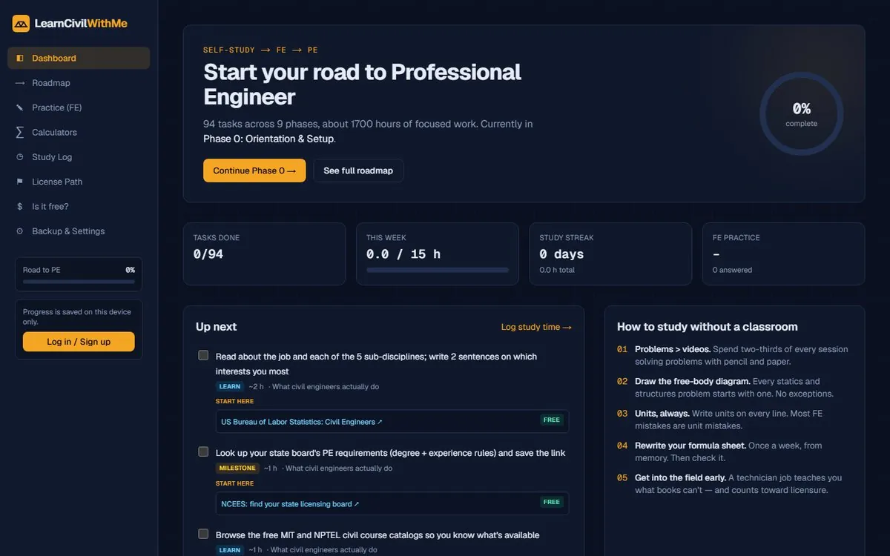

A free, self-paced path from day one to a US civil engineering license, built for students who can't rely on classes alone.
94tasks in 9 phases
145FE-style questions
6engineering calculators
- Every task links to vetted, mostly free resources
- Beam, section, Manning's flow and concrete calculators checked against hand calculations
- Optional accounts with cloud-synced progress
Next.jsTypeScriptPostgreSQLVercel